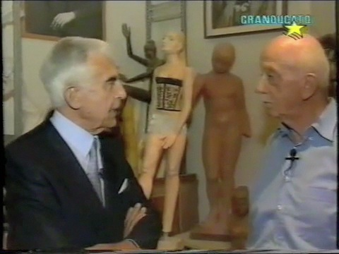
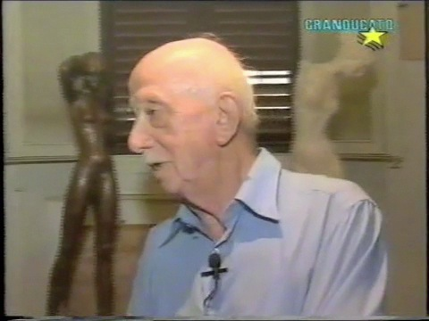
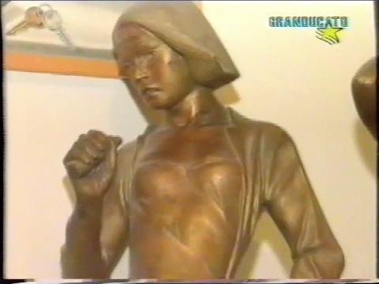
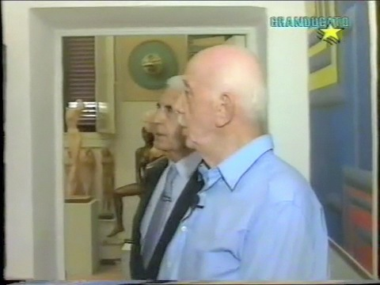
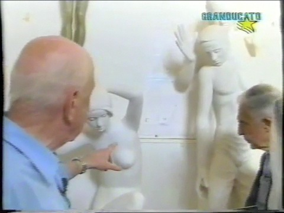
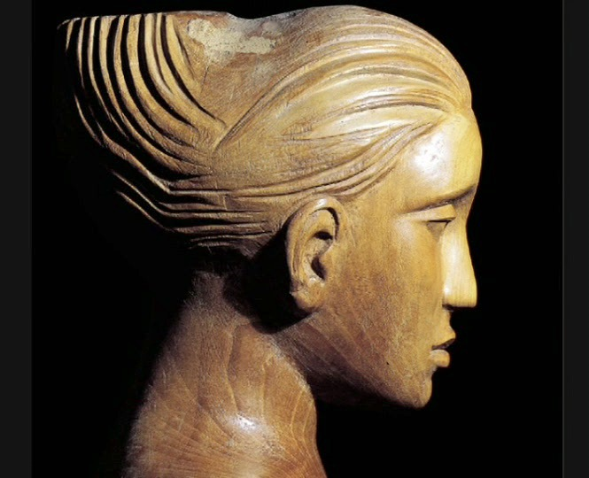
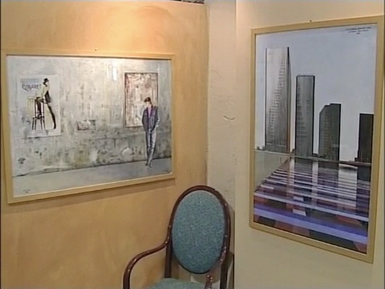

Vitaliano De Angelis ARTISTA

Video
-

Intervista Winspearparte 1
Vitaliano intervistato da Massimo Winspeare
-

Intervista Winspearparte 2
Vitaliano intervistato da Massimo Winspeare
-

Intervista Winspearparte 3
Vitaliano intervistato da Massimo Winspeare
-

Intervista Winspearparte 4
Vitaliano intervistato da Massimo Winspeare
-

Intervista Winspearparte 5
Vitaliano intervistato da Massimo Winspeare
-

Mostra Villa Mimbelli
La Mostra del 2006 ai Granai di Villa Mimbelli a Livorno
-

Mostra alla Bottega del Caffè
Mostra dei disegni di Parigi realizzata nel 2008 alla Bottega del Caffè